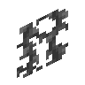

#supplementaries:flower_box_tall_plantable
物品标签 · 32 个已收录成员 · 另有 3 个未收录 id
标签成员 (32)
 高丝兰花
高丝兰花atmospheric:tall_yucca_flower
 鹤望兰
鹤望兰environmental:bird_of_paradise
 粉红色翠雀花
粉红色翠雀花environmental:pink_delphinium
 蓝色翠雀花
蓝色翠雀花environmental:blue_delphinium
 紫色翠雀花
紫色翠雀花environmental:purple_delphinium
 白色翠雀花
白色翠雀花environmental:white_delphinium
 扇紫花丛
扇紫花丛eternal_starlight:nightfan_bush
 粉玫瑰丛
粉玫瑰丛eternal_starlight:pink_rose_bush
 秋海棠
秋海棠natures_spirit:begonia
 栀子花
栀子花natures_spirit:gardenia
 毛地黄
毛地黄natures_spirit:foxglove
 荷包牡丹
荷包牡丹natures_spirit:bleeding_heart
 康乃馨
康乃馨natures_spirit:carnation
 银灌木
银灌木natures_spirit:silverbush
 蓝风信子
蓝风信子natures_spirit:blue_bulbs
 啮龙花
啮龙花natures_spirit:snapdragon
 薰衣草
薰衣草natures_spirit:lavender
 香蒲
香蒲natures_spirit:cattail
 开花灯心草
开花灯心草upgrade_aquatic:flowering_rush
 向日葵
向日葵minecraft:sunflower
 丁香
丁香minecraft:lilac
 牡丹
牡丹minecraft:peony
 玫瑰丛
玫瑰丛minecraft:rose_bush
 瓶子草
瓶子草minecraft:pitcher_plant高草丛
minecraft:tall_grass
 甜浆果
甜浆果minecraft:sweet_berries
 发光浆果
发光浆果minecraft:glow_berries
 大型蕨
大型蕨minecraft:large_fern
 甘蔗
甘蔗minecraft:sugar_cane缠怨藤
minecraft:twisting_vines

藤蔓minecraft:vine垂泪藤
minecraft:weeping_vines
使用该标签的配方
无
未收录条目 (3)
berry_good:sweet_berry_pipsberry_good:glow_berry_pipscreate_bic_bit:sunflower_seeds